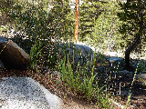
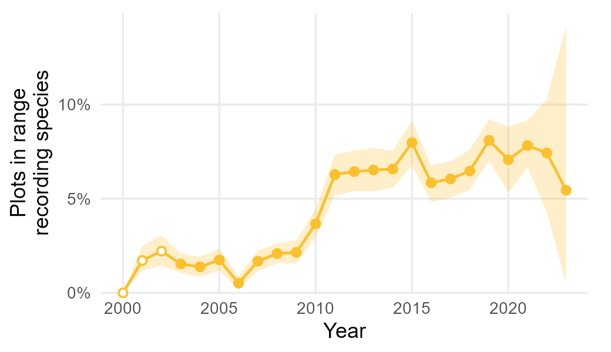
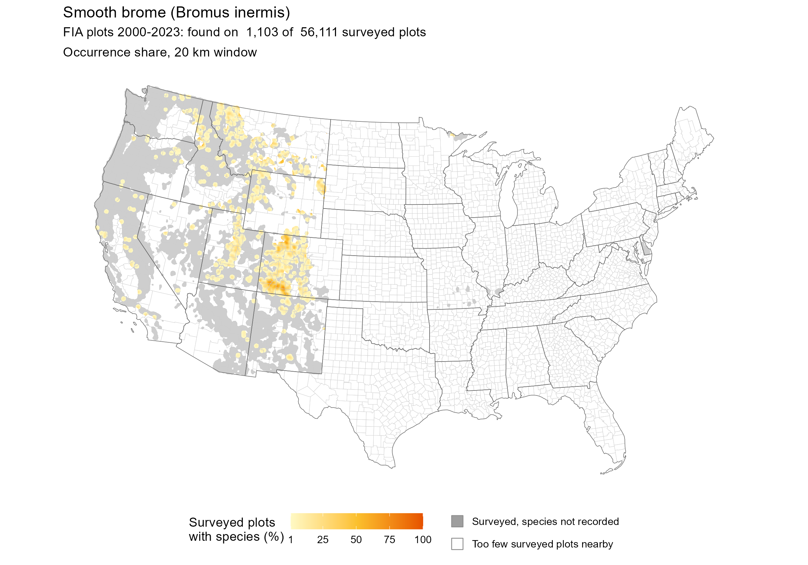

Photo: Matt Lavin from Bozeman, Montana, USA, CC BY-SA 2.0, via Wikimedia Commons
| Plant form: | Grass |
|---|---|
| Max age: | Perennial (long-lived) |
| Max height: | 1.0 m (39 in) |
| Origin: | Introduced / Invasive (Eurasia) |
| Importance: | Major hay & pasture grass |
| Plot type: | Understory vegetation: 24-ft subplots |
| FIA plots: | Found on 1,103 of 56,111 plots (2.0%) |

Each year's share combines state-level shares with fixed state weights, counting only plots inside the species' mapped range (plus 20 km around its records). Band: 90% bootstrap interval. Hollow points: years when states holding over a quarter of the weight were not measured.
| Year | Plots in range | Plots recording | Share | 90% interval | Flag |
|---|---|---|---|---|---|
| 2000 | 157 | 0 | 0% | 0% – 0% | Low state coverage |
| 2001 | 398 | 14 | 1.72% | 1.16% – 2.49% | Low state coverage |
| 2002 | 843 | 25 | 2.22% | 1.45% – 3.04% | Low state coverage |
| 2003 | 1,159 | 25 | 1.54% | 1.05% – 2.10% | |
| 2004 | 1,262 | 17 | 1.38% | 0.84% – 1.91% | |
| 2005 | 1,308 | 22 | 1.75% | 1.19% – 2.35% | |
| 2006 | 1,205 | 6 | 0.52% | 0.17% – 0.89% | |
| 2007 | 1,291 | 35 | 1.68% | 1.16% – 2.24% | |
| 2008 | 1,240 | 46 | 2.09% | 1.57% – 2.62% | |
| 2009 | 1,277 | 46 | 2.15% | 1.56% – 2.80% | |
| 2010 | 1,561 | 71 | 3.67% | 2.93% – 4.44% | |
| 2011 | 1,695 | 95 | 6.29% | 5.17% – 7.35% | |
| 2012 | 1,602 | 96 | 6.44% | 5.39% – 7.55% | |
| 2013 | 1,365 | 86 | 6.52% | 5.40% – 7.70% | |
| 2014 | 1,469 | 97 | 6.57% | 5.58% – 7.55% | |
| 2015 | 1,344 | 107 | 7.98% | 6.76% – 9.14% | |
| 2016 | 1,447 | 85 | 5.85% | 4.84% – 6.77% | |
| 2017 | 1,444 | 88 | 6.05% | 5.05% – 6.99% | |
| 2018 | 1,413 | 91 | 6.47% | 5.48% – 7.61% | |
| 2019 | 1,399 | 117 | 8.10% | 7.01% – 9.22% | |
| 2020 | 940 | 64 | 7.07% | 5.33% – 8.84% | |
| 2021 | 1,221 | 100 | 7.83% | 6.66% – 9.16% | |
| 2022 | 426 | 22 | 7.43% | 4.27% – 10.30% | |
| 2023 | 129 | 5 | 5.45% | 0.50% – 14.16% |
